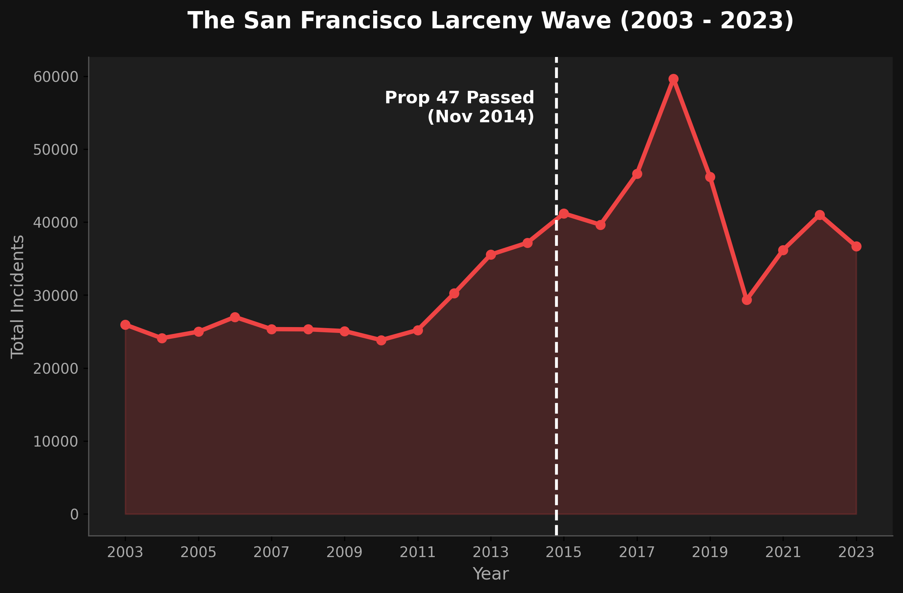

[Write your intro here. Introduce the SFPD incident dataset (2003-Present) so the reader knows the source. Explain what "Larceny/Theft" means in this context—primarily car break-ins and shoplifting. Introduce the main question: San Francisco has a reputation for property crime, but has it always been this way?]
[Introduce Proposition 47, passed by California voters in November 2014, which reclassified certain non-violent property crimes under $950 from felonies to misdemeanors. Set up the first chart by asking the reader to look at what happened immediately after it passed.]

[Transition Text: The surge is undeniable, peaking around 2017. But a city-wide line chart doesn't tell us *who* is being affected. Did neighborhoods across the entire city experience this wave equally, or was it concentrated?]
[Set up the map. Explain that we isolated the data to the absolute peak of the wave to see where the crisis was truly centered. Point out that the heat is almost entirely swallowed by downtown and major tourist corridors.]
[Transition Text: So Larceny surged, and it was highly concentrated. But a critical thinker might ask: Did *all* crime go up during this period? Was SF simply becoming more dangerous overall?]
[Set up the final interactive chart. Explain how comparing Larceny to other property crimes (like Burglary and Motor Vehicle Theft) reveals a fascinating trend. Encourage the reader to hover over the interactive chart below to see how Larceny decoupled from other crimes.]
[Nail your final learning outcome here. Acknowledge that while the graph jumps right after Prop 47, data is never neutral. Mention that reporting methods may have changed (e.g., SFPD introduced easier online reporting for car break-ins around this time).]
[Discuss other factors: This era also coincided with a massive tech-boom, extreme wealth inequality, and a surge in tourism, creating more opportunity for auto-glass theft. Explain that while Prop 47 is a compelling narrative, real-world data is deeply complex and interwoven with social dynamics.]